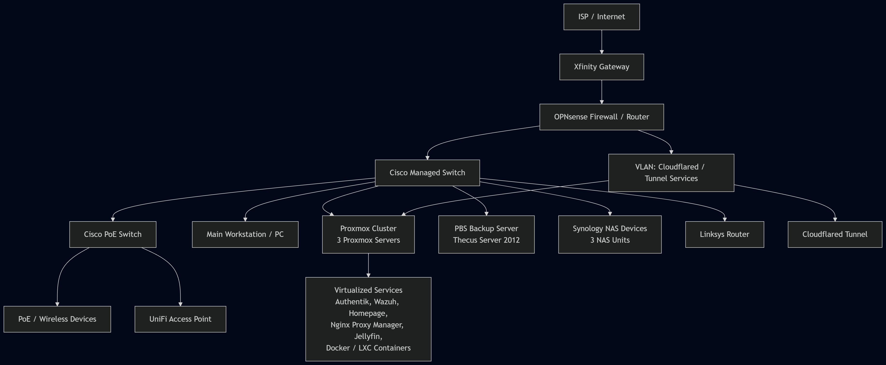

Featured Project | Infrastructure
Enterprise Homelab Architecture
A public-safe view of my enterprise-style homelab: virtualized compute, edge firewalling, switching, storage, secure access, identity, monitoring, and documentation built around real operational habits.
Sanitized Logical Diagram
The public diagram keeps the architecture useful while removing internal IPs, MAC addresses, serial numbers, exact firewall details, and credentials.

Architecture
- Bare-metal OPNsense edge firewall for routing, DNS, DHCP, and traffic policy.
- Proxmox-based virtualization across rackmount and small form factor hardware.
- Managed switching, wireless access, NAS storage, and internal service hosting.
- Reverse proxy and tunnel patterns for public-facing services without publishing private details.
- Documentation-first workflow for inventory, topology, services, and change tracking.
Why It Matters
This lab shows the kind of thinking a junior network or security technician needs: knowing how systems connect, where access should be controlled, what depends on what, and how to document changes so troubleshooting is faster.
Project Areas
Each page expands one part of the homelab into a resume-ready project.
OPNsense Edge Firewall
Routing, DHCP, DNS, NAT review, IDS concepts, and controlled management access.
Open project ->Proxmox Infrastructure
VMs, LXC containers, service placement, storage thinking, and workload documentation.
Open project ->Remote Access Design
Cloudflare Tunnel and mesh VPN patterns for safer access to internal systems.
Open project ->Authentik Identity Lab
SSO, access control, identity-provider concepts, and authentication workflows.
Open project ->Public-Safe Boundary
This portfolio intentionally names technologies and design patterns, but it does not publish private addressing, MAC addresses, live firewall rule detail, secrets, or complete configuration exports.